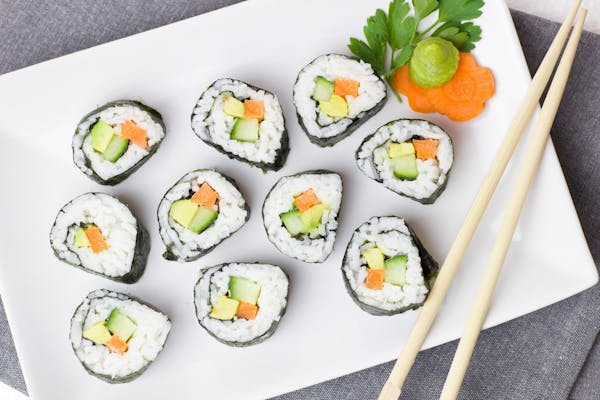

2 1/2 cangkir air
1/2 cangkir cuka beras
2 sendok makan gula
1 sendok teh garam
Nori (lembaran rumput laut kering)
1 buah alpukat, iris tipis
1 buah mentimun, iris tipis
200 gram daging kepiting imitasi atau asli, suwir-suwir
Mayones (opsional)
Bijan (opsional)
2. Buat Campuran Cuka: Dalam panci kecil, campurkan cuka beras, gula, dan garam. Panaskan dengan api kecil hingga gula dan garam larut. Jangan sampai mendidih.
3. Campur dengan Nasi: Tuangkan campuran cuka ke nasi sushi yang sudah agak dingin. Aduk perlahan hingga merata.
4. Siapkan Nori: Letakkan lembaran nori di atas tikar bambu (makisu). Ratakan nasi di atas nori dengan tangan yang sudah dibasahi air agar tidak lengket.
5. Tambah Isian: Letakkan irisan alpukat, mentimun, dan daging kepiting di bagian tengah nasi. Tambahkan mayones jika diinginkan.
6. Gulung Sushi: Gunakan tikar bambu untuk menggulung nori dan isian menjadi gulungan yang rapat. Tekan perlahan agar padat.
7. Potong dan Sajikan: Gunakan pisau tajam yang dibasahi air untuk memotong gulungan menjadi beberapa potongan sushi. Taburi bijan di atasnya jika diinginkan.
Sushi
Bahan-bahan
2 cangkir nasi sushi (nasi jepang)2 1/2 cangkir air
1/2 cangkir cuka beras
2 sendok makan gula
1 sendok teh garam
Nori (lembaran rumput laut kering)
1 buah alpukat, iris tipis
1 buah mentimun, iris tipis
200 gram daging kepiting imitasi atau asli, suwir-suwir
Mayones (opsional)
Bijan (opsional)
Instruksi
1. Masak Nasi: Bilas nasi sushi hingga airnya jernih. Masak nasi dengan air dalam rice cooker atau panci hingga matang. Biarkan sedikit mendingin.2. Buat Campuran Cuka: Dalam panci kecil, campurkan cuka beras, gula, dan garam. Panaskan dengan api kecil hingga gula dan garam larut. Jangan sampai mendidih.
3. Campur dengan Nasi: Tuangkan campuran cuka ke nasi sushi yang sudah agak dingin. Aduk perlahan hingga merata.
4. Siapkan Nori: Letakkan lembaran nori di atas tikar bambu (makisu). Ratakan nasi di atas nori dengan tangan yang sudah dibasahi air agar tidak lengket.
5. Tambah Isian: Letakkan irisan alpukat, mentimun, dan daging kepiting di bagian tengah nasi. Tambahkan mayones jika diinginkan.
6. Gulung Sushi: Gunakan tikar bambu untuk menggulung nori dan isian menjadi gulungan yang rapat. Tekan perlahan agar padat.
7. Potong dan Sajikan: Gunakan pisau tajam yang dibasahi air untuk memotong gulungan menjadi beberapa potongan sushi. Taburi bijan di atasnya jika diinginkan.